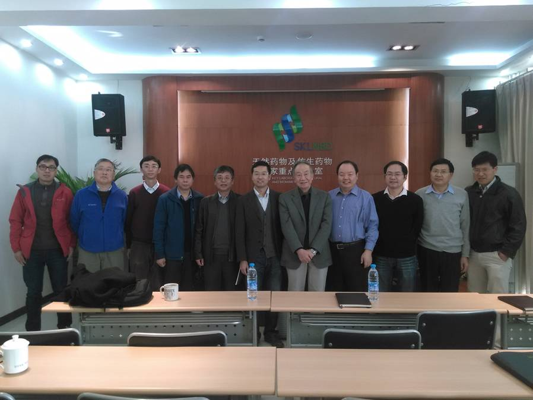

2014年11月12日，应天然药物及仿生药物国家重点实验室张礼和院士和叶新山教授的邀请，北京大学教授、北京生命科学研究所高级研究员、北大-清华生命科学联合中心研究员雷晓光教授来我室进行学术交流，并做了题为“Dissecting Cell Death by Means of Chemical Genetics and Complex Natural Product”的精彩学术报告，报告会由周德敏教授主持，张礼和院士、叶新山教授、王春光教授、张亮仁教授、杨振军教授、李润涛教授、王克威教授、叶敏教授、焦宁教授、董甦伟特聘研究员等六十余人出席报告会。
雷晓光教授课题组多年来一直从事活性天然产物的全合成及后继化学生学研究，致力于“Using small molecules to dissect and modulate cell death”。自2009年开始，该课题组先后完成了一系列具有重要抗肿瘤活性的倍半萜寡聚体类天然产物（如Gochnatiolides及其寡聚体Ainsliadimers和Trimers）的全合成；在上述全合成工作的同时对其抗肿瘤作用靶点进行了深入的研究，利用biotin标记Ainsliadimer A活性天然产物探针发现了其作用靶点为NF-κB通路的IKKα和IKKβ蛋白，并借助于基因突变及共价交联及高分辨质谱等技术进一步确认其与上述蛋白的46位半胱氨酸结合，相关成果先后发表Cell, 2012, 148, 213; Nat. Chem. Biol, 2013, 9, 84及 Nat. Chem. Biol, 2014 (in press) 上。此外，利用该课题组发现的一类全新的基于临亚基苯醌和烯基硫醚的点击化学所实现的生物正交反应，首次在活细胞内实现了对于这一类天然产物作用靶点的荧光定位，并证实活性三聚体Ainsliatrimer A的抗肿瘤作用是通过PPARγ受体的激活产生的，该工作近日发表在Angew. Chem. Int. Ed. (2014) 上，被认为是“New chemistry could help peer inside cells”工作。
报告结束后，雷晓光教授针对师生的提问，进行了详细的解答和热烈的交流，对Chemical Genetics一些前沿性学术问题进行了探讨，大家获益匪浅。
